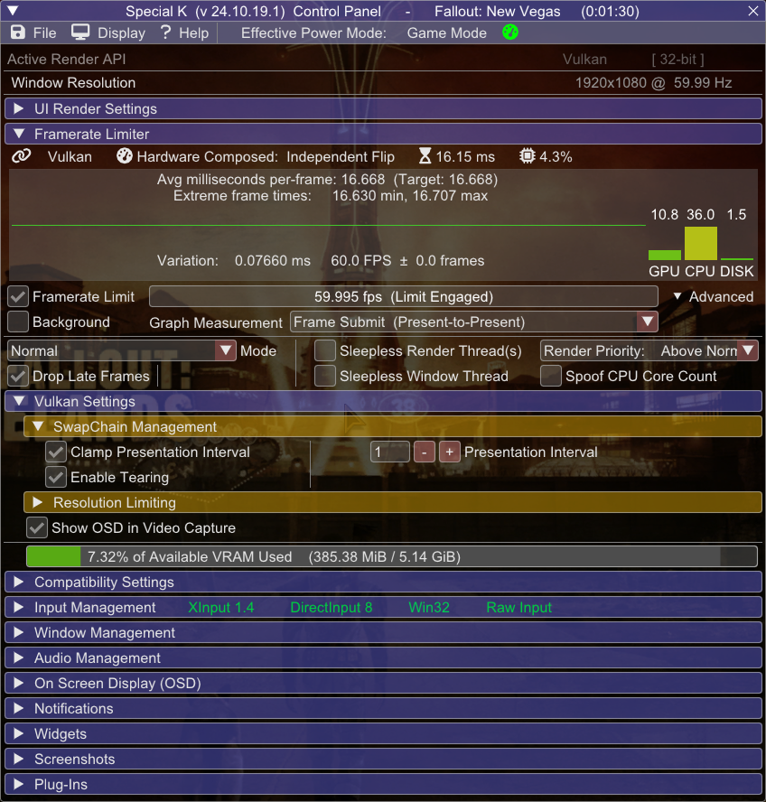

Introduction
Welcome!
Goal of this guide is to fix the abysmal performance in Fallout New Vegas by using more modern technologies and tweaks, and make you generally aware of its quirks and other potential issues.The guide is mostly written with an assumption that you've completed Utilities sections from Viva New Vegas or Essentials from The Best of Times, but it'll still cover mods contained within those guides.
While the guide is focused on this particular game, most stuff shown here is applicable to other games.
Content presented here may seem insanely long, but that's really just because I'm trying to explain everything in detail to reduce further questions and confusion - sadly there's a lot of "gotchas" when it comes to PC hardware and its configurations.
Most abbreviations are explained in Terminology section, and can always be hovered over to see their full name.
If you find some sections confusing, feel free to ask on Discord.
Why?
Let's be honest here, the engine did not age well. The renderer is based on now 22 year old DirectX 9, which fails to fit-in with modern GPUs and Windows.
It's extremely inefficient and CPU bound, has glaring issues with display modes, memory handling and overall stability.
As for Bethesda's code - it also fails (horribly) to scale well with modern processors, something that you can see even in their latest titles.
To make things worse, Fallout New Vegas was compiled without compiler optimizations, which while making engine modding easier, reduces the overall performance.
In short most performance issues can be summed with two words: CPU bottleneck.
Even with that fact in mind, there are some tweaks to be done on the GPU and presentation side of things that can help with the overall responsiveness of the game, despite not fixing the performance on its own.
Terminology
Things You Should Know
-
Vertical Synchronization (V-Sync) - technology allowing to keep display's scanout and refresh in phase to eliminate screen tearing,
at the cost of higher latency.
(Latency lowers along with refresh rate) - G-Sync | Freesync - Variable Refresh Rate (VRR) technologies developed by NVIDIA and AMD respectively. They allow the display to adapt its refresh rate to the framerate, allowing to use V-Sync at arbitrary framerates and reduce its latency[1] .
- Multiplane Overlays (MPOs) - hardware scanout planes for the GPU. They allow for hardware image composition without any latency or performance penalty (for example displaying windows on top of each other), as well as their hardware scaling and stretching. MPOs are supported since Windows 8.1. Hardware capabilities vary between GPU manufacturers.
-
Input Latency (lag) - time between input event (mouse click, keyboard press) and the event being displayed on the screen. The lower the latency, the more responsive the game feels.
There are multiple sources of latency, varying from GPU/CPU usage, display mode, framerate count and many more - most of them are covered in this guide.
- Yes, despite popular misinformation, VRR alone doesn't get rid of tearing. It can minimize the rolling tear however, but that varies between displays, and such, it's not a guaranteed feature. Additionally, the latency reduction applies only at framerates below V-Sync window (display's native refresh rate) - if framerate matches the native refresh rate, VRR engages V-Sync emulation.
Technicalities
More text inside. Explains the concept of presentation models and display modes. While not needed to use the guide, it'll help you with understanding why things are the way they are.
Used a guide already?
If you came here from Viva New Vegas or The Best of Times, you can skip the next two sections and jump right to Fog-based Object Culling.
Following steps are for those who haven't used those guides, or want to know more about the more important settings.
lStewieAl's Mods
Rewritten
lStewieAl has made a few of mods focused on improving the engine perfomance in multiple aspects (loading, rendering, AI processing).
Installation
-
If not already downloaded, download lStewieAl's Tweaks and Engine Fixes and install it with your mod manager.
-
If not already downloaded, download Stewie Tweaks - VNV INI and install it with your mod manager.
-
Download lStewieAl's Engine Optimizations and install it with your mod manager.
-
Download Faster Main Menu and install it with your mod manager.
New Vegas Tick Fix
Stutter Remover
New Vegas Tick Fix is a mod by karut that fixes and improves game's internal clocks and memory management, which dramatically reduces stutter. It also allows for playing above 60fps without breaking physics.Additionally, it has some DirectX changes, which help with performance and greatly reduce memory usage.
Installation
-
If it's not already installed, download NVTF from Nexus and install with your mod manager.
-
Double-click on NVTF in Mod Organizer, then open NVTF.ini in the INI Files tab, and set:
Enables NVTF's DirectX changes.bModifyDirectXBehavior = 1
It's required for following settings to work:-
Enables triple buffer V-Sync, which gets rid of problematic framerate halving on FPS drops/instability caused by double buffer V-Sync.
bToggleTripleBuffering = 1
This change has no effect if you don't use V-Sync
The potential latency increase is eliminated by properly capping FPS, which is done later in the guide -
Enabled by default
bUseDefaultPoolForTextures = 1
Disables texture mirroring between VRAM and RAM, which decreases RAM usage. Allows to use high resolution textures.
It's required if you use any kind of graphics mods.
This change breaks Alt-Tab functionality in Fullscreen Mode.[4]
To mitigate that either use DXVK, or Windowed Mode.
Or just don't Alt-Tab.
-
-
D3D9 loses the graphics device if it loses the screen ownership (Alt-Tab, Sleep, etc.). To recover, it needs to either have a copy of textures in RAM, or be able to reconstruct the memory from ground up.
Fallout New Vegas, like most D3D9 games, use the first method. Thus by disabling this behavior, after Alt-Tabbing, game is in a limbo where it doesn't know what to do.
DXVK fixes this by simply being in place of D3D9, while Windowed mode guarantees the game will never own the screen in the first place.
Fog-based Object Culling
Occluded
Simple mod I made to help in areas like Dead Money or Point Lookout, which are very densely packed with objects, yet have a lot of fog hiding them. Dynamically adjusts draw distance in accordance with the fog to improve performance with little to no visual difference.Using this mod will prevent you from configuring draw distance settings in-game. Please use the launcher or INI to configure them.
zlib Updated
Compressed
Fallout New Vegas uses zlib compression for its BSA archives and plugins (NPC and Landscape records).zlib on its own does not belong to the fastest compression algorithms, and the version used by Bethesda is older than the game itself, which only makes things worse.
By simply updating the library to the latest version, you can cut the time spent on decompression in half, which leads to faster loading times and less stuttering.
This mod works only in cases where you actually have such compressed data in the first place.
Most mods from 2024 should not have plugin compression, and we decompress vanilla game files using BSA Decompressor or by Tale of Two Wastelands. In such cases, this mod won't have any effect, as there's nothing to do in the first place.
Unfortunately, there are a lot of older (and even new) mods with compression applied (even Yukichigai Unofficial Patch - YUP itself).
In such cases it's recommended to actually decompress your plugins, which can be very easily done by following this guide. Prevention is better than mitigation, and costs nothing.
Mods with BSA archives are already rare on Nexus, and usually recent, so most often they are not using compression, or deliberately compressed due to their large sizes. Using the plugin in such cases is more sensible.
Graphics Drivers and Windows
Driver Updates
Not much to say here - for the best compatibility and performance, you must be using the newest driver for your graphics card.
You can check what GPU you have by opening Task Manager, and going to the Performance tab - the last GPU in the left pane should be your main one.
If you don't see any GPU there, that means your GPU is too old to use DXVK.
AMD USERS!
This step is especially important for you as drivers 24.1.1 - 24.5.1 crash the game.Make sure you have driver 24.6.1 or newer!
Select your graphics card to go the driver download page |
||
|---|---|---|
Multiplane Overlays and Windows Watermark
This part applies only to D3D9 with Fullscreen Optimizations and DXVK with DXGI, since D3D9 Windowed is already in the DWM composed mode, and DXVK uses FSE.
You can ignore this section if you have following GPUs:
- Nvidia 16 series and newer
- AMD Vega and newer (single display only)
- Intel CPUs 8th Gen and newer
Make sure your Windows is activated, otherwise the watermark will kick the game into the DWM composition, which leads to increased latency, worse performance and disables VRR.
If you don't have a GPU with MPO (Multiplane Overlay) support, you can mitigate this by disabling Fullscreen Optimizations.
(Keep in mind that this trick won't work on modern, D3D12 games, so it's still recommended to just activate Windows)
How to check if your GPU supports MPOs:
- Type dxdiag into Windows search
- Click Save All Information and save the file.
- Open the DxDiag.txt file, press Ctrl+F and look for MPO MaxPlanes
- If the number is greater than 1, then your GPU has MPO support.
Having the watermark without MPOs will disable VRR and increase input latency and stuttering!
Virtualization
Windows 11 uses virtualization features to increase system and inter-process security. Unfortunately, this can come at a performance cost, especially on lower-end hardware.I won't be writing on how to disable them, because... Microsoft already made a tutorial about it.
This step is not mandatory, as when it comes to security, it's up to you to decide. Just letting you know that this exists, and that even Microsoft acknowledges the fact that it can degrade perfomance.
Power Plans and Modes
With Windows 10, Microsoft introduced power modes, which are meant to be replacement for power plans in terms of power and perfomance management.Power modes require the Balanced power plan to be active to work. If you're any other power plan, you won't be able to use them (On most modern systems, you may find that you don't even have other power plans at all because of this).
To change your power mode, go to Power settings, and select whatever highest performance option you have if the dropdown menu.
On some older, or custom built machines you may not have selectable power modes at all - in that case, all that matters is just having the Balanced power plan active.
If you are on a laptop, power modes are saved per connecton state - selecting a mode while on battery will not change the mode when you plug in the charger, and vice versa.
Warning!
Using custom power plans is not recommended due to how integral the Balanced power plan is to Windows 10 and 11 at the low level.It can break power management on modern hardware, and can lead to increased power consumption and/or decreased performance (or even mess up things like fan speed).
It is safer to customize the Balanced power plan to your liking, rather than using a custom one. (We all can agree this is not intuitive at all).
Game Mode
Windows 10 introduced a feature called Game Mode, which puts the system in a more gaming-friendly state.Game Mode is a "power mode overlay", which means it requires power modes to work - the Balanced power plan must be active.
Game Mode features:
- Enables AutoHDR for DXGI based games.
- Enables VRR optimizations for games using Flip Model - Forces the screen to sync to game's refresh rate instead of any windows that may be on top of it.
- Disables Windows Update.
- Disables notifications.
- Disables file indexing, if "Respect Device Power Mode Settings" is enabled in Search settings.
- Enables CPU scheduling optimizations for Ryzen CPUs.
Game Mode is enabled by default. If you had it disabled for some reason, you can enable it here.
Display Mode Differences
Presentation Problems
Here's a comparison of three display modes you can use in this game. Situation is problematic mainly due to Vulkan and D3D9 using old presentation models.This section is purely informative, just to let you know what options you have and what to expect from them.
Flip Model Windowed
|
Legacy/Optimized Fullscreen |
BitBlt Model Windowed
|
|---|---|---|
|
|
|
|
|
|
- Despite that disabled V-Sync unlocks the framerate, window itself is V-Synced, so you don't get any benefits.
-
While AMD enables Freesync for Fullscreen Windowed BitBlt surfaces, Nvidia allows G-Sync to run with any window.
This is problematic because refresh rate can get synchronized to wrong windows, framerate may break on other displays and display stutters may occur.
Enabling it globally is a bad idea, because it disrupts normal desktop usage (e.g. screen can sync to sleeping windows).
It's recommended to use Nvidia Profile Inspector to set G-Sync Application Mode to "Fullscreen and Windowed" in Fallout - New Vegas profile. This makes Windowed G-Sync run only when the game is running.
Keep in mind that even with this method, this G-Sync implementation is still buggy - if you get any of the forementioned issues, disable it.
Never enable Windowed G-Sync globally!
DXVK
Translation Magic
DXVK is an open source Direct3D 9-11 to Vulkan translator project lead by Philip Rebohle (doitsujin) and Joshua Ashton. While created mainly for Linux, works unofficially on Windows.In short, it allows you to run Fallout using the Vulkan API which has much lower draw call overhead than D3D9, which is one of the main performance limiting factors in this game.
If you play on Linux, you are already using DXVK. That said, it's still recommended to go through this section and use dxvk.conf from the Nexus release.
Things about DXVK you must acknowledge:
-
DXVK improves performance in mainly draw call (CPU) bound scenarios (e.g. draw distance), and usually doesn't help much in GPU bound ones (e.g. resolution)
-
It is possible that DXVK won't change anything for you, or even make things worse
-
-
You may experience increased stutter at the beginning of your playthrough due to shader compilation.
-
DXVK's GPU compatibility varies between manufacturers
-
Nvidia GPU laptops must use the DXGI interop (see below).
Using it on desktops is not required, but highly recommended for the most optimal experience -
AMD GPUs must use the DXGI interop (see below), otherwise they will suffer from severe performance issues or fail to launch the game.
Shader issues are more common on Windows compared to other GPUs (situation is completely reversed on Linux).
-
Intel GPUs from 6th Gen and newer can work provided you have newest drivers installed.
On some iGPUs, DXVK is broken past the 1.10.1 version.
-
-
Fallout New Vegas has some known shader issues or quirks. They are not guaranteed to happen (getting rarer with DXVK updates), but they can occur:
- Transparency multisampling uses dithering - (Vulkan handles alpha to coverage differently than drivers)
- If you are an AMD, RADV Linux user, you can disable this behavior by setting RADV_DEBUG=noatocdithering environment variable.
- Blood decals can suffer from color overflow and turn white - uncommon, most reports come from AMD GPUs, but issue can appear on Nvidia
HDR-Mod
HDR-Mod is a DXVK mod made by Lilium (aka EndlesslyFlowering) and me with the intention of adding HDR functionality to D3D9 games. Effectively it does 2 major things:-
Allows to display the game in HDR (10 or 16 bit).
-
Upgrades the precision with which the game calculates colors, greatly reducing banding - as long as you have a 10 bit display or better.
DXVK doesn't perform any HDR tone mapping, so you need to use Pumbo's ReShade AutoHDR or Special K (Nvidia only) for that.
Failing to do so will result in washed out colors and incorrect brightness.
Screenshot Tonemapping
Game's built-in screnshot function doesn't support HDR, so you need to use Special K, Game Bar, Steam or Nvidia Overlay to take screenshots.Installation
-
Manually download the latest DXVK version from Nexus.
If you have a HDR display, you can select the HDR version mentioned above.
GPUs lacking Vulkan 1.3 support or having issues with 2.0, must use the 1.10.3 version.
Some Intel iGPUs need to use the 1.10.1 version.
-
Extract archive contents into your Fallout New Vegas root folder.
- If you have chosen the HDR version, download HDR Save Image Patch and install it with your mod manager.
Enabling Flip Model (DXVK with DXGI)
Nvidia and AMD drivers have ability to use DirectX to display Vulkan games allowing for Flip Model in Windowed mode, which has HDR and VRR support, and better latency.This step is mandatory for Nvidia laptops and AMD GPUs to work with DXVK, otherwise you will suffer heavy performance issues.
If you chose to install the HDR version of DXVK, you also must use this method.
Nvidia desktops can, and are recommended to use it for the best experience, but ultimately it's optional.
Nvidia
AMD
Recommended FPS Limiters and Their Configurations
(Not) Pushing the Limits
Limiting framerate is very important for overall stability.First and foremost, if you are using a good limiter, you'll be implementing correct framepacing, which is the most important thing for the overall feel of fluidity.
More advanced limiters can also reduce latency or power consumption (it's difficult to have both).
Always limit your framerate to an amount you can actually achieve, otherwise you won't get any benefits!
Letting your GPU overwork itself has a big latency impact, so try to cap your framerate at such value, where your GPU doesn't sit at constant 100% usage.
Running at smoother, lower framerate is always better than high, albeit laggy and stuttery one.
Recommended Setups
Recommended configurations based on selected display scenarios:-
V-Sync
The "default" option - choose this if you don't have Variable Refresh Rate display or don't mind slight latency.- Framerate must be capped slightly below refresh rate to reduce latency.
V-Sync on its own is NOT a limiter. Using it as one introduces a massive latency penalty.
This workaround applies only to RTSS and D3D9 Special K.
(Not needed if you use Special K + DXVK with DXGI) -
G-Sync | Freesync
Choose this if you have a Variable Refresh Rate display - it offers the best balance between latency and visual smoothness.- V-Sync must be enabled, in order to fully get rid of tearing.
- Framerate must be capped below refresh rate, in order for VRR to not disengage and fallback to V-Sync, as this causes a very big increase in latency.
-
No V-Sync
Choose this if you want to reduce latency as much as possible, and don't mind tearing (if you are an advanced user, you can get rid of tearing using Special K or RTSS).- No special prerequisites.
Due to Bethesda's oversight, the V-Sync toggle in the launcher doesn't work.
To disable V-Sync, in FalloutCustom.ini set the following:Disabling V-Sync through other means (Driver, Special K, DXVK) also works.[Display]
iPresentInterval=0
So many options...
Even with New Vegas Tick Fix, game can still have issues with high framerates. It's recommended to cap your framerate below around 120 FPS.
Riva Tuner offers great compatibility, good performance and a super versatile On-Screen Display, while Special K packs an insane amount of features and offers amazingly smooth framepacing, but comes at a cost of potential compatibility issues.
No matter which one you will end up choosing, you won't pick wrongly - both softwares offer smooth gameplay and low latency.
If you don't use, or not have VRR, it's best to limit your framerate to fractions of your refresh rate. (30 at 60hz, 72 at 144hz, etc.)
Click on the cards below to show the instructions for each limiter.
RivaTuner Statistics Server
Riva Tuner Statistic Server by Unwinder is probably the most famous FPS Limiter and OSD software, thanks to its performance, compatibility and versatile On-Screen Display.
Special K
Special K is a mod by Kaldaien focused mainly on fixing performance in games and implementing HDR.Its list of features is too long to write here, but the most important one used here is its incredibly versatile limiter and if using DXGI, HDR and (almost) lagless V-Sync.
Warning!
- Special K may conflict with Riva Tuner. If the game crashes or SK doesn't show up in game, in RTSS settings, enable Use Microsoft Detours API hooking, or set injection delay to 30000
- Special K's interface in D3D9 breaks water reflections when visible. Simply not having Special K's interface visible fixes the issue.
- Special K's Vulkan support is currently limited to Nvidia GPUs.
- If you are using the latest (555.85) driver, Nvidia Overlay will cause a black screen when using Special K. Disable it in GeForce Experience settings.
Calculated values are not provided because Special K already does that automatically, and with higher precision.
Installation
- Download the Special K Archive from the Stable section.
- From the downloaded archive, extract SpecialK32.dll to your Fallout New Vegas root folder and rename it to dinput8.dll
- Download the archive with preconfigured settings and extract its content to your root folder.
- Launch Fallout New Vegas and press Ctrl + Shift + Backspace to enter Special K Control Panel.
-
Enable the Framerate Limit by ticking the checkbox, then right click on the bar (not graph) next to it:
-
No V-Sync
In right click menu select your refresh rate
Click on Advanced and select the Latent Sync (VSYNC -Off-) modeOptional - Configuring Latent Sync to get rid of tears

-
V-Sync
The subtraction is needed only for D3D9!
The preset included with the guide already optimizes V-Sync for DXGI, so you only need to select the limit.In right click menu select your refresh rate, then Ctrl-Click on the Framerate Limit bar and subtract 0.05
-
VRR + V-Sync
Included INI preset enables automatic VRR detection which takes care of everything.
To make sure the detection was successful, check if the Auto VRR Mode checkbox in Advanced limiter settings is green.
In case it failed, enable the limiter, right click on the bar and tick the VRR Bias option. After that, select Low Latency (VRR Optimized) mode.The limit is selected based on your maximum refresh rate!
In case you can't reach that limit consistently, lower it to your average FPS amount.
-
No V-Sync
- Open the HDR menu at the top of Special K's control panel menu and press the HDR Setup button.
- Select the scRGB HDR option from the HDR Calibration widget.
- Restart the game.
- For more information, see Special K Wiki.
If you use DXVK, on the first launch Special K will ask you to enable DXVK support/ Vulkan bridge. Click Yes and relaunch the game if needed.
Your configuration should look similar to this: (picture shows "No V-Sync" configuration on DXVK + DXGI)

Nvidia Exclusive - HDR output
If you have a HDR compatible display and use HDR DXVK, you can use Special K to output in native HDR.
Keep in mind that it can decrease your performance a bit due to higher render bit depth.
FAQ
Are these questions really frequent?
-
I can't use DXVK, and I need to Alt-Tab!
All you can do is download OneTweak or Special K and use the legacy Windowed mode.
Remember to enable Windowed mode itself in FalloutCustom.ini![Display]
bFull Screen=0 -
Fake Fullscreen, Borderless Windowed, Fullscreen Windowed, Windowed Fullscreen - is there any difference?
No. All of these terms refer to the same thing - a borderless window that covers the whole screen. There's no official name for it, so people use different ways to describe it. -
Why is guide recommending using Windows' Game Mode? I heard that it's bad.
Most, if not all Game Mode stigma comes around from its initial implementation in 2017.That version of Game Mode had two (now removed due to issues) features:
- Resource prioritization - Game Mode would try to prioritize resources for the game, which led to issues with background applications, or breaking games themselves.
- Flip Model upgrade for windowed games - Original implementation tried to upgrade selected D3D9 and D3D11 games, but often faced an issue where games would not exit software composition, leading to increased lag and worse performance.
Modern Game Mode does not have these features, and instead focuses on generic Windows tweaks, like disabling background services (Windows Update, Search Indexing).
Flip Model upgrade functionality has been moved into Windows itself, split between Fullscreen Optimizations (All Direct3D versions; Windows 10) and Windowed Optimizations (Direct3D 10 and 11; Windows 11).
Additionally, some vendors like AMD are using it to detect games and apply their own optimizations (CPU scheduling in AMD's case).
These features are enabled by default and don't suffer from the issues of the original Game Mode. -
Why does Special K show D3D11 instead of Vulkan when using DXVK with DXGI?
The DXGI interop uses D3D11 to display the game, and sometimes Special K can't detect the presence of DXVK due to 3rd party programs.
It's nothing to worry about, it's purely a visual difference - Special K is running in D3D11 mode regardless of the name you see. -
Any way change brightness in Windowed Mode?
Use ReShade or Dynavision to change the brightness. -
Do texture mods really have an impact on performance?
In most cases, no. As long as you don't go over your VRAM budget and use NVTF's memory pool patch you'll be fine. If you happen to run out of VRAM, you'll get a massive performance degradation, due to graphics memory being spilled over into RAM.
What is guaranteed from higher resolution textures is increase in their load time. This can translate into longer stutter periods on cell loads. -
You talk about HDR. I thought FNV already had it?
HDR mentioned in game setting refers to HDR rendering, where game renders lighting passes in 16 bits, instead of 8. This leads to properly glowing lights thanks to the precision of using 65536 colors per channel instead of 256. (Glowing elements won't be clamped anymore, and will glow instead.)
Due to the old age of the game, this data is later converted to 8 bit SDR (HDR in Windows was added in 2017!). Additionally, D3D9 obviously doesn't support HDR output in the first place, hence the need for the DXGI interop. -
DXVK is breaking HDR after exiting the game!
Yes, unfortunately due to how FSE works, in addition to lack of native Windows support from DXVK, it doesn't properly handle the HDR API.
If your GPU supports it, use DXVK with DXGI to resolve this issue. -
Is dgVoodoo 2 a viable alternative to DXVK?
No. While it is true that you'd gain Windowed mode with Flip Model and HDR from it, in contrast to DXVK you are guaranteed to get lower perfomance due to the translation overhead.
If you can handle the performance loss, sure go ahead. -
Is it possible to use D3D9Ex in Fallout New Vegas?
Technically yes - Fallout New Vegas, oddly enough is the only Bethesda title with native D3D9Ex support. Does it work well? Not really.
While Special K's D3D9Ex enforcement works far better that NVTF's, it still suffers from CPU perfomance loss and increased GPU usage.
-
During ReShade installation, which API should I choose if I use DXVK?
Vulkan.
Finish
The End?
Congratulations! You've made it through! I hope this guide has helped you making Fallout New Vegas a smoother experience.If you have any issues, questions, critiques or recommendations hit us up on Discord - wall_sogb and Ungeziefi.
You can also find us on ModdingLinked, xNVSE, Tale of Two Wastelands servers.
I recommend checking this guide from time to time - We're not done yet.
If you found this guide helpful, share it with others or support me on Ko-Fi or Patreon
Things worth reading
Here are some links to stuff that I recommend checking out:- New Vegas Visual Renewal - nice and easy to follow graphics guide by Salamand3r that actually doesn't break your game for a nice change of pace.
- PCGamingWiki - Great website, contains really helpful info about games, patches, fixes and other PC gaming related stuff.
- BlurBusters - Amazing website by Mark Rejhon focused on displays, latency and image quality. Really worth checking it out if you are a geek for these things.
- HDR Den - Discord server dedicated to HDR enthusiasts and developers. If you want to learn more about HDR, this is the place to go.
Credits
This is the part where I'd like to thank people who have helped me in whatever way making this guide possible.-
Whole xNVSE server for being a great community. Especially:
- Ungeziefi - for testing and helping with benchmarks
- c6 - for fixing the some engine functions so my testing could be easier
- LOC (aka ItsMeJesusHChrist) - for making the awesome logo for the guide
- Nice try karut, but you are not getting credited
- Whole Special K server for also being a superb community with a lot of knowledgeable people. This guide would literally not exist without them.
- Glaceon575 - for helping with benchmarks and providing screenshots for AMD GPUs
-
You